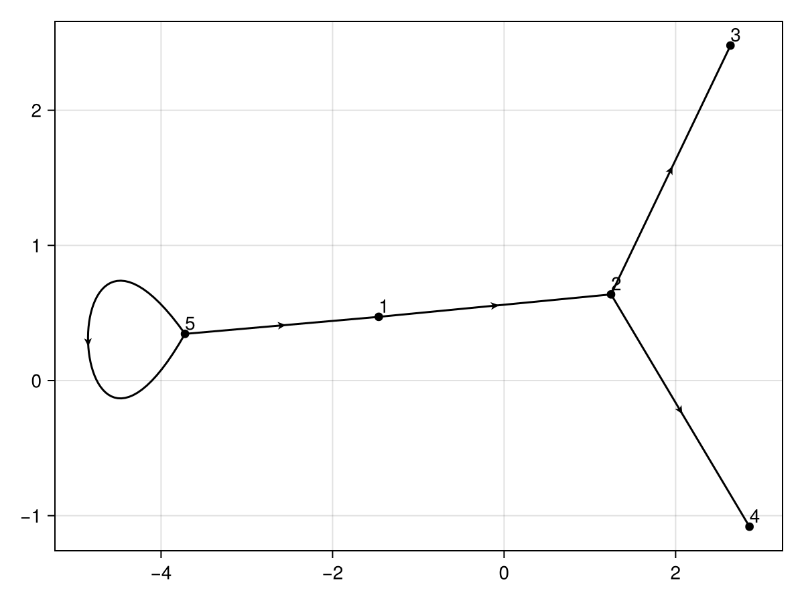

Organizational Graphs
using OrganizationalGraphs
using DataFrames
using Graphs
using MetaGraphs
using GraphDataFrameBridge
org1 = DataFrame("employee" => ["A", "B", "C", "D", "T"], "manager" => ["T", "A", "B", "B","T"])
g1 = MetaDiGraph(org1, :manager, :employee) # directed graph
using GLMakie
using GraphMakie
using CairoMakie
using GraphMakie.NetworkLayout
# graphplot(g1, arrow_show=true, layout=Spectral(), nlabels = string.(vertices(g1)))
graphplot(g1, arrow_show=true, nlabels = string.(vertices(g1)))
d1 = dijkstra_shortest_paths(g1, 1)
d1.dists
using OrganizationalGraphs
org_depth(org1)This gives the organizational depth of all employees.

Output
julia> org1 = DataFrame("employee" => ["A", "B", "C", "D", "T"], "manager" => ["T", "A", "B", "B","T"])
5×2 DataFrame
Row │ employee manager
│ String String
─────┼───────────────────
1 │ A T
2 │ B A
3 │ C B
4 │ D B
5 │ T T
julia> od1 = org_depth(org1)
5×6 DataFrame
Row │ employee manager index org_depth path_index path_name
│ String String Integer? Int64 Array…? Array…?
─────┼────────────────────────────────────────────────────────────────────────────
1 │ A T 1 1 [5, 1] ["T", "A"]
2 │ B A 2 2 [5, 1, 2] ["T", "A", "B"]
3 │ C B 3 3 [5, 1, 2, 3] ["T", "A", "B", "C"]
4 │ D B 4 3 [5, 1, 2, 4] ["T", "A", "B", "D"]
5 │ T T 5 0 [5] ["T"]
julia> recursive_managers_tall(od1)
14×8 DataFrame
Row │ employee manager index org_depth path_index path_name Level LevelManager
│ String String Integer? Int64 Array…? Array…? String String
─────┼──────────────────────────────────────────────────────────────────────────────────────────────────
1 │ A T 1 1 [5, 1] ["T", "A"] L1 T
2 │ A T 1 1 [5, 1] ["T", "A"] L2 A
3 │ B A 2 2 [5, 1, 2] ["T", "A", "B"] L1 T
4 │ B A 2 2 [5, 1, 2] ["T", "A", "B"] L2 A
5 │ B A 2 2 [5, 1, 2] ["T", "A", "B"] L3 B
6 │ C B 3 3 [5, 1, 2, 3] ["T", "A", "B", "C"] L1 T
7 │ C B 3 3 [5, 1, 2, 3] ["T", "A", "B", "C"] L2 A
8 │ C B 3 3 [5, 1, 2, 3] ["T", "A", "B", "C"] L3 B
9 │ C B 3 3 [5, 1, 2, 3] ["T", "A", "B", "C"] L4 C
10 │ D B 4 3 [5, 1, 2, 4] ["T", "A", "B", "D"] L1 T
11 │ D B 4 3 [5, 1, 2, 4] ["T", "A", "B", "D"] L2 A
12 │ D B 4 3 [5, 1, 2, 4] ["T", "A", "B", "D"] L3 B
13 │ D B 4 3 [5, 1, 2, 4] ["T", "A", "B", "D"] L4 D
14 │ T T 5 0 [5] ["T"] L1 T
julia> recursive_managers_wide(od1)
5×10 DataFrame
Row │ employee manager index org_depth path_index path_name L1 L2 L3 L4
│ String String Integer? Int64 Array…? Array…? String? String? String? String?
─────┼────────────────────────────────────────────────────────────────────────────────────────────────────────────────
1 │ A T 1 1 [5, 1] ["T", "A"] T A missing missing
2 │ B A 2 2 [5, 1, 2] ["T", "A", "B"] T A B missing
3 │ C B 3 3 [5, 1, 2, 3] ["T", "A", "B", "C"] T A B C
4 │ D B 4 3 [5, 1, 2, 4] ["T", "A", "B", "D"] T A B D
5 │ T T 5 0 [5] ["T"] T missing missing missing